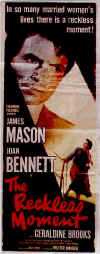

DVD Review Archive
Feature Archive Links DVD MIA DVD
Alerts Movie Posters Laser Site Info Home E-mail
© 2002 Films on Disc Stuart J. Kobak ALL RIGHTS RESERVED.
|
|
There's extraordinary visual tension between Margaret and Beau immediately. The screenplay gets to the heart of The Deep End very efficiently, effectively drawing you into the film.
Set in beautiful Lake Tahoe, the scenery is breathtaking. Those rock formations in the water are worth seeing.  The complications and manipulations are well-done. The visual story-telling is well done. It's a combination of fine photography and editing. What lengths will a mother go to to protect or shelter her child? That may be the chief problem for The Deep End. Are these the natural waters for Margaret to swim through? The intensity of Tilda Swinton's performance helps carry the film. I am not certain that the actions of Margaret are that convincing and certainly the film could have headed in another direction. But, we are in thriller territory under the guidance of co-writer/directors Scott McGehee and David Siegel III. The pile on the melodramatic flourishes for effect. The dangers of non-linear editing are frequent. You can lose a story thread very easily, but you can inject movement and excitement into static moments. Nice editing. The movement within scenes is very well cut. Very good music. The water imagery flows through the film effectively, but then the sort of just evaporate. . Alek Spera's emotional investment is staged to convincing effect. Spera is a lonely guy, a stranger to this country, who is touched by the idea of family. Perhaps his seduction to family is a bit far-fetched, but it's still convincing. It's probably the best moments in the film, even though it doesn't pivot on Swinton's anchor performance. The film takes a different turn owing to the complexities created by the singular incident that is perhaps a trifle too telegraphed.
The good-looking transfer from Fox is consistently sharp. Black levels have a fine range and shadow detail is revealing. Colors are fully saturated maintaining clean space. Textures are well-delineated. Natural looking skintones. It's definitely too edgy. Noise is introduced to fine detail from the enhancement. Swinton's pale, pasty complexion sometimes appear slightly blown out. The Dolby Digital 5:1 surround has excellent spatial qualities with excellent dynamic range. Dialogue is cleanly delivered. |
Film noir: The phrase hangs awkwardly on the tongue, shadowy images peek out from behind half-closed doors. Click on the Noir and Noir Again symbol for a look into the dark spaces of Hollywood's revisiting of film noir.
Vanishing, The/A,B  Like a perfect short tale from Poe. Not typical fare digested by American audiences. The Vanishing, a film that ranks with classics of the genre, must be considered a collectible. In Dutch with English subtitles.
|